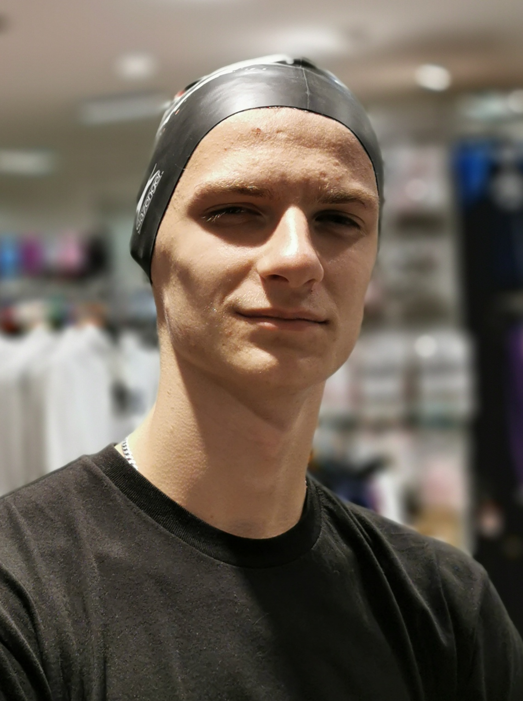

Krátko o mne
Volám sa Richard Búri. Mám 21 rokov a narodil som sa v Želiezovciach. Vyrastal som však v Leviciach, kde doteraz bývam.
Na základnú školu som chodil v Leviciach. Aj na strednú školu som chodil v Leviciach. Kedže vysoké školy v Leviciach nemáme, rozhodol som sa, že pôjdem študovať do Bratislavy. Spočiatku som ani na vysokú školu ísť nechcel, no kamaráti ma prehovorili a tak som tu. Som veľmi rád, že sa im podarilo prehovoriť ma, pretože pracovať určite nechcem.
Veľmi dlho som nemal žiadne záľuby, pretože som bol demotivovaný tým, že mi hneď všetko nejde tak ako by som chcel. V deviatom ročníku na základnej škole som sa rozhodol, že začnem trénovať kickbox, ktorý sa mi od malička páčil. Samozrejme som hneď nebol najlepší (ani teraz nie som). Neprestal som však a nakoniec sa mi podarilo na súťažiach vybojovať pár medajlí. Bohužiaľ, náš klub sa postupne rozpadal a už to nebolo ono, tak som si povedal, že je čas nájsť si niečo iné. Ďalšia vec, čo sa mi od malička páčila bola parkour, no v Leviciach žiadne možnosti trénovania neboli, preto som sa rozhodol, že aspoň z časti si sen splním a naučím sa ovládať svoje telo. Začal som trénovať s vlastnou váhou na hrazdách. Neskôr som zistil, že takéto cvičenie je šport a nazýva sa Calisthenics. Naučil som sa už zopár zaujímavých vecí a v učení pokračujem dodnes.